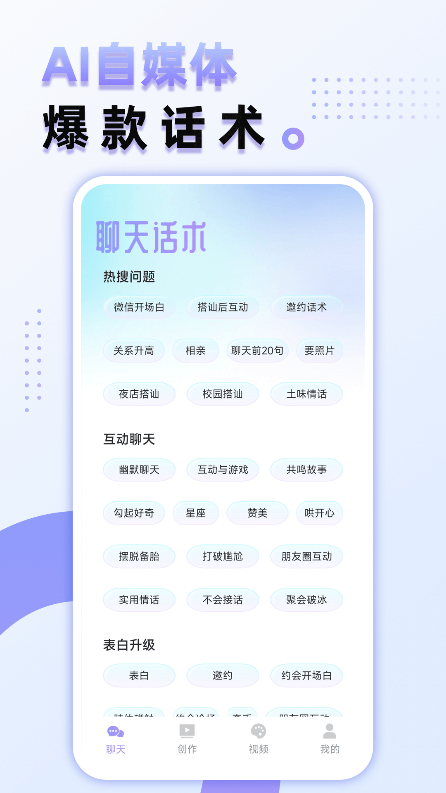
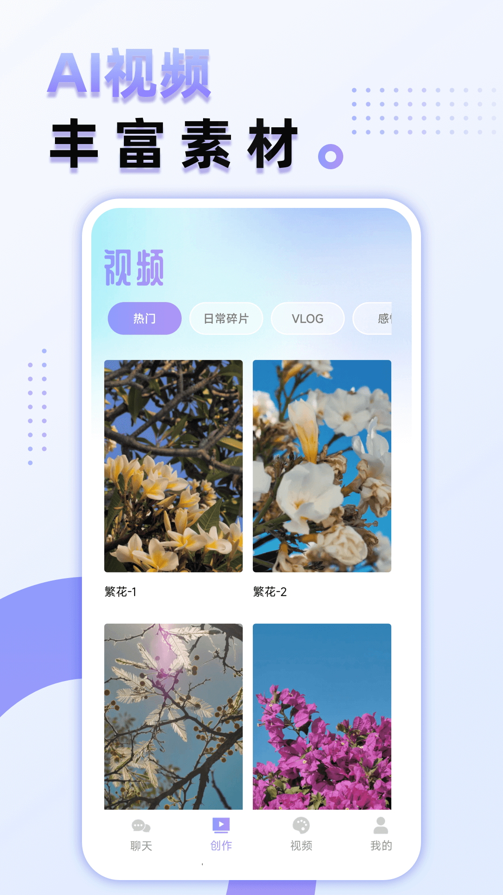

Ai Max 这一路：从工具箱到电商创作引擎的三年迭代
一个从单功能 AI 工具起步的应用，如何在三年里长成覆盖图像、视频、数字人全链路的创作平台。从样本文档里的功能模块反推，看看团队到底在死磕什么。
先看现在这版：它是什么样
现在打开 Ai Max，你会发现这个 App 已经不是当初那个"几个 AI 小工具凑在一起"的模样了。去它的官网看看就知道——首页分了好几块：AI 创作引擎、AI 工具箱、数字人视频，还有一整套电商场景的快捷入口。如果第一次接触，很容易觉得功能太多——从画一张图到生成一段带口播的视频，从给照片换件衣服到去个水印，什么都能做。
但真正让我觉得它跟别的 AI 工具不一样的，不是功能数量，而是它在电商场景的投入。样本文档里提到的 AI 换衣功能，专门解决的就是"同一张模特图换十件衣服"这种电商卖家天天在碰的事。还有 AI 带货那条链路：脚本生成、模特换装、场景绘画、数字人念口播——四个工具串成一条流水线，这不是给普通用户做的，是给在淘宝、抖店上真金白银卖货的人做的。

它从哪起步
翻了Ai Max文档发现没有写版本历史，这本身就是一条线索——早期的迭代痕迹大概率已经被后来的功能盖过去了。但从几个功能模块的成熟度差异，还是能拼出一个大概的时间线。
最早的一批功能应该是 AI 工具箱里那几样：去水印、画质增强、图像上色。这些都是单张图片的处理任务，技术上属于 AI 修复和超分辨率的成熟应用，用户画像也最广——从修自己的老照片到帮公众号处理配图，谁都用得上。这个阶段的 Ai Max，跟市面上其他 AI 修图工具没什么本质区别，靠几个点解决具体痛点来拉第一批用户。
然后应该是 AI 绘画进来了。文生图、图生图，这个时候产品开始有"创作"属性，不再只是修修补补。但样本文档里 AI 绘画的出现更多是作为其他功能的"辅助角色"——比如 AI 换衣可以搭配 AI 绘画生成场景背景，水印去不掉可以用 AI 绘画重新画一张。这种定位说明 AI 绘画不是独立卖点，而是整个工具链里的一环。
关键转折点：从工具到场景
真正的转折点，我猜是 AI 换衣功能的加入。为什么说它关键？因为它不是一个通用工具——"给人物照片换衣服"这件事，技术上是图像分割 + 纹理迁移的组合，但产品设计上完全是奔着电商去的。样本文档里写的使用建议：正脸清晰、光线均匀、穿贴身基础款——这些建议的语气，跟给服装设计师写的使用手册一模一样。
AI 换衣之后，AI 带货那条链路就顺理成章地接上了。先出脚本，再换衣服，再画场景，最后数字人念口播——四步走完直接出一条商品短视频。这不是给创作者锦上添花的功能，是给中小卖家降维打击的：原来请模特实拍、请剪辑做视频的成本，现在几十块会员费就能覆盖。
会员体系也是这个阶段出来的，直接从官方下载装一份就能体验完整功能。样本文档里有周卡、月卡、年卡三档，年卡日均五毛，定价明显是往"长期重度用户"那边靠。如果还是通用工具阶段，会员定价不会这么激进——但当产品开始服务电商卖家这种高频、刚性的使用场景时，年卡就变成合理选项了。

团队一直在死磕什么
从样本文档的功能覆盖来看，有一件事很清楚：团队一直在把"单次操作"变成"完整链路"。
去水印是单次操作，但如果去不掉怎么办？样本文档给了方案二——用画质增强工具再处理一遍，给了方案三——用 AI 绘画重新生成。这不是三个独立功能，是一条递进的解决路径。
AI 生成超时了怎么办？样本文档从网络排查、重启应用、降低难度、检查会员状态四步走，分不同功能还各有专属解法。这种"同一个问题给三四套方案"的写法，说明团队自己踩过这些坑，而且把踩坑经验整理成了产品文档。
反过来，什么一直没做？样本文档里没有提到的部分其实很多——没有提到社区、没有提到模板市场、没有提到多人协作。这些是很多 AI 创作工具会做的事，但 Ai Max 好像完全没在这上面花心思。连 AI 绘画都没单独做一个"画廊"或"灵感墙"，它就是工具链里的中间环节，用完就走。
照这个路线，下一步大概率怎么走
如果从迭代规律来推，不是官方口径——我觉得接下来有两个方向值得关注。
一个是工具链的"最后一公里"。现在 AI 带货链路四步走完出视频，但样本文档里没说视频出来之后怎么分发。是直接导出保存？还是有自动发布到各大平台的入口？如果 Ai Max 真要把电商场景做深，分发环节迟早要碰。
另一个是会员体系的分层。现在只有三档时间卡，权益上只提到会员有优先队列。但如果重度用户真的是电商卖家群体，他们可能需要的不只是"不用排队"——更高分辨率的导出、更多并发任务、批量处理模式，这些都是可以单独做成增值权益的。年卡 ¥198 的定价，现在看还是偏保守。
当然也有可能团队会继续在图像和视频的基础能力上死磕。样本文档里 AI 生成超时的排查占了很大篇幅，说明服务器压力一直是问题。如果能在生成速度和成功率上再有一个量级的提升，那比加十个新功能都管用。
总之，从工具箱到创作引擎，Ai Max 这三年走的是一条很务实的路：不为潮流分心，盯着一个具体场景（电商）往深了挖，把单次操作串成完整链路。这条路能不能走通，还得看他们能不能把最后一公里补上。相关资料在GitHub、Gitee、GitCode三个平台都能拿到，方便不同网络环境下查阅。